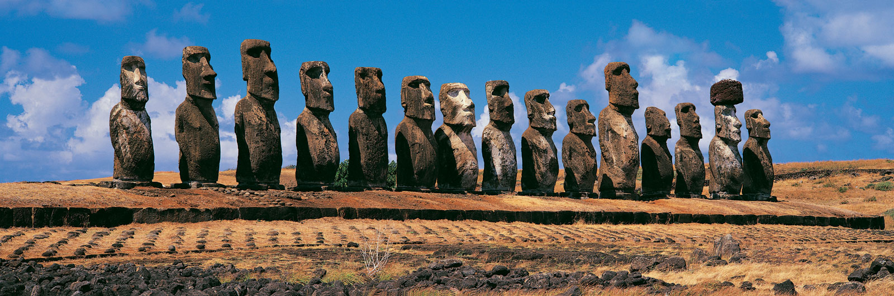
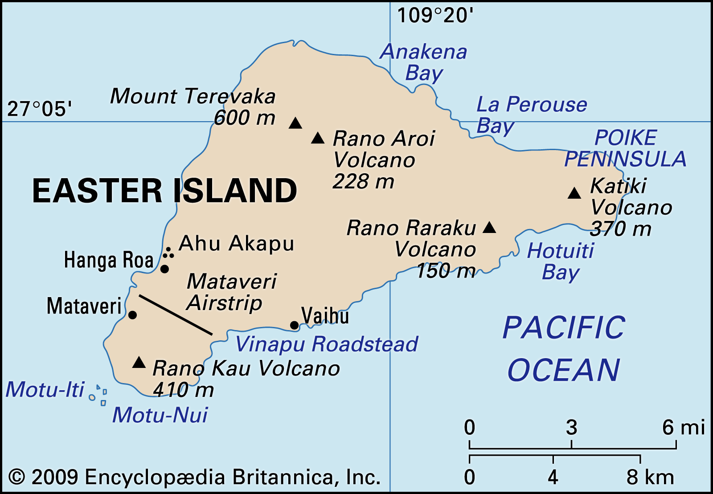
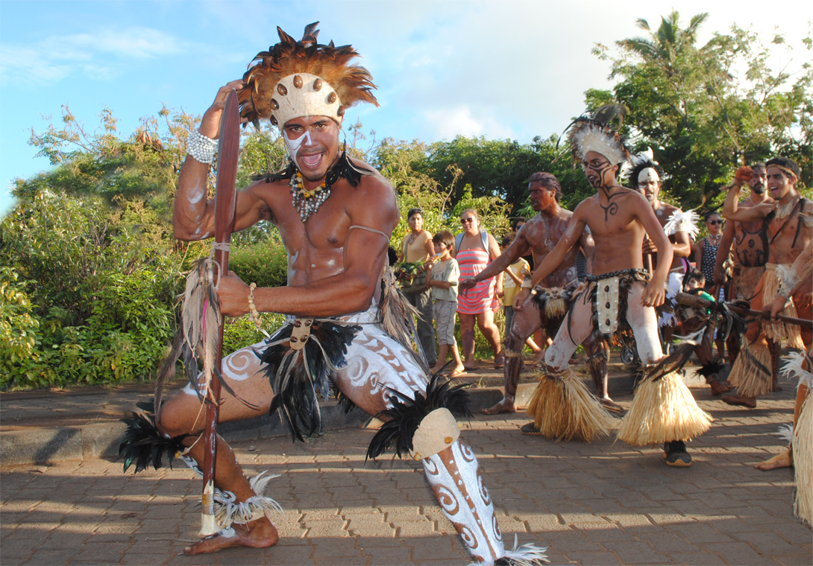
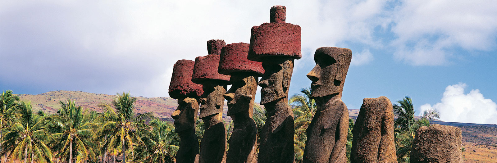

Easter Island, Spanish Isla de Pascua, also called Rapa Nui , Chilean dependency in the eastern Pacific Ocean. It is the easternmost outpost of the Polynesian island world. It is famous for its giant stone statues. The island stands in isolation 1,200 mile s (1,900 km) east of Pitcairn Island and 2,200 miles (3,540 km) west of Chile. Forming a triangle 14 miles (23 km) long by 7 miles (11 km) wide, it has an area of 63 square miles (163 square km); its highest point, M ount Terevaka, is 1,969 feet (600 metres) above sea level.
The small and hilly island is not part of a sunken landmass but is a typical oceanic high island formed by volcanoes rising from the seafloor. Geologic and oceanographic evidence shows that no perceptible emergence or submergence of the island’s coastline has taken place since the last fall in sea level, which occurred less than 10,000 years ago. However, in the early 21st century Easter Island experienced increasing coastal erosion because of rising sea levels, which also threatened various archeological sites. Three extinct volcanoes chiefly composed of tuff (a porous rock formed of compacted volcanic fragments) and joined by their own lava flows give the island its characteristic triangular shape. Parasitic tuff craters and cones (i.e., craters and cones formed on the side of, or near, volcanoes after the original vent has become plugged up) are interspersed in the landscape, which is otherwise dominated by eroded lava fields in which obsidian is commonly found.
Most of these fields are thickly packed with both large and small lumps of cellular and tuffaceous lava that is either black or rusty in colour. Stoneless surface soil is sparse; it is suitable for extensive cultivation mainly in the Hanga Roa and Mataveri area in the southwest, at Vaihu and on the plain southwest of the volcano Rano Raraku, and on the prehistorically cleared Poike peninsula in the eastern corner of the island. Rain collects in the partly bog-covered crater lakes of the volcanoes Rano Kao, Rano Raraku, and Rano Aroi. One intermittent stream, fed by the Rano Aroi crater lake, flows down Mount Terevaka’s slopes before disappearing into the porous soil. Water from the extremely deep crater of Rano Kao, which is about 3,000 feet (900 metres) wide, is piped to Hanga Roa. The coast is formed by soft, eroded, ashy cliffs, with a vertical drop of about 500 to 1,000 feet (150 to 300 metres); the cliffs are intercepted by long stretches of low, hard, and rugged lava formations.
There is no natural harbour, but anchorage is found off Hanga Roa on the west coast; off Vinapu and Hotu-Iti on the south coast; and off Anakena and in the Bahía la Perouse on the north coast. Notable among the few small offshore islets are Motu-Nui, Motu-Iti, and Motu-Kaokao (which figured in a local bird cult) near the southwest cape. The only true sand beach is at Anakena; most other beaches are of gravel. Caves abound, many consisting of subterranean rooms joined by narrow tunnels extending far into the lava beds.
The island’s population represents the easternmost settlement of a basically Polynesian subgroup that probably derived from the Marquesas group. The original Rapa Nui vocabulary has been lost except for some mixed Polynesian and non-Polynesian words recorded before the Tahitian dialect was introduced to the decimated population by missionaries in 1864. Today Spanish is generally spoken. In their traditions, the islanders consistently divide themselves into descendants of two distinct ethnic groups, the “Long-Ears” and the “Short-Ears” (see below). Intermarriage is common, and an influx of foreign blood has become increasingly dominant in recent years.
Whereas the aboriginal economy was based on the cultivation of sweet potato, chicken raising, and coastal fishing, the island has shifted to a cash economy based on tourism. The opening of an airport at Mataveri near Hanga Roa has permitted an increasing influx of tourists since the 1960s, and a few small hotels have been built in the village area, where many islanders and settlers from continental Chile also have accommodations in their homes. The ties to continental Chile are strengthened through twice-weekly flights from Santiago and the building of schools, hospitals, and a large community hall for sports and performances. A well-organized Chilean national park system provides guided tours and security for the unique archaeological monuments. Reforestation projects have been successfully initiated, including eucalyptus plantations at Vaitea and coconut groves in Anakena Bay.
The island is famous for its gigantic stone statues, of which there are more than 600, and for the ruins of giant stone platforms (ahus) with open courtyards on their landward sides, some of which show masterly construction. Archaeological surveys were carried out in 1886, 1914, and 1934; archaeological excavations were initiated in 1955. The excavations revealed that three distinct cultural periods are identifiable on the island.
The early period is characterized by ahus at Tahai, Vinapu, and Anakena, carbon-dated to about 700–850 CE. The first two were admired and described by Captain Cook; the wall in Anakena remained hidden below ground until it was excavated archaeologically in 1987. The excavations in Anakena have revealed that a variety of statues were carved in the early period, among them a smaller prototype of the middle-period busts, which mainly differ from the latter by their rounded heads and stubby bodies. Another type was a realistic sculpture in full figure of a kneeling man with his buttocks resting on his heels and his hands on his knees, in one case with his ribs exposed, all features characteristic of pre-Inca monuments at Tiwanaku in South America.
In the middle period, about 1050–1680, statues were deliberately destroyed and discarded, and all ahus were rebuilt with no regard for solar orientation or masonry fitting. The sole desire seems to have been to obtain strong platforms capable of supporting ever taller and heavier busts, the classical moai of the middle period.
Burial chambers also were constructed within the ahus in the middle period. The sizes of the statues made were increased until they reached stupendous dimensions; the slim and lofty busts also had huge cylindrical pukao (topknots) of red tuff placed on top of their slender heads. Most middle-period statues range from about 10 to 20 feet (3 to 6 metres) in height, but the biggest among those formerly standing on top of an ahu was about 32 feet (10 metres) tall, consisted of a single block weighing about 82 tons (74,500 kg), and had a pukao of about 11 tons (10,000 kg) balanced on its apex. The largest statue still standing partly buried in the deep silt below the quarries is about 37 feet (11 metres) tall, and the largest unfinished one with its back attached to the rock is about 68 feet (21 metres) tall. Traditions, supported by archaeology, suggest that the images represented important personalities who were deified after death. From one to a dozen completed statues would stand in a row on a single ahu, always facing inland.
